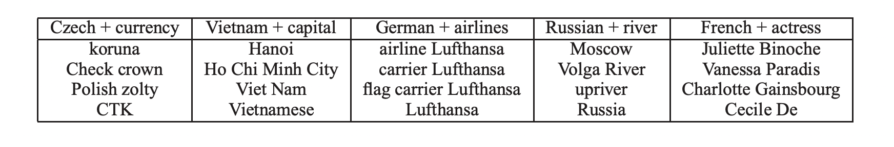

Paper Presentation
qiushiyan/transformers-paper-presentation
11/2/22
The 3 papers series in Word2Vec
Efficient Estimation of Word Representations in Vector Space (Jan 2013)
Distributed Representations of Words and Phrases and their Compositionality (Oct 2013)
Enriching Word Vectors with Subword Information (2016)
What was achieved then
Skip-Gram works well on datasets of various sizes, and can better represent less frequent words.
\[ \frac{1}{T} \sum_{t=1}^T \sum_{-c \leq j \leq c, j \neq 0} \log p(w_{t+j} | w_t) \]
For big datasets, the estimation is more efficient than previous neural network based methods.
It also work well with small datasets due to less parameters.

The problem
- Performance is not optimal because full softmax is hard to compute
\[ p(w_t | w) = \frac{\exp(w_t^Tw)}{\color{yellow}{\sum_{t=1}^T \exp(w_t^Tw)}} \]
- Inability to represent idiomatic phrases
- i.e., vec(“Air”) + vec(“Canada”) is far away from vec(“Air Canada”)
use approximation with less complexity
train on phrase vectors
Solution for performance
Negative Sampling
- manually create negative samples (k < 20) for each context-target pair and fit a logistic regression model to find the weights
Hierarchical Softmax
- each word is represented by a node in a binary tree, random walk is used to assign proababilities for each node, thus the complexity is reduced to \(O(log(W))\)
Subsampling for frequent words
- each word in the corpus is discarded with the probability
\[ p(w_i) = 1 - \sqrt{\frac{t}{f(w_i)}} \]
Algorithm for negative sampling
for word in context_window:
s_1 = (word, target, 1)
for i in range(k):
random_word = sample(all_words)
if random_word != target:
s_i = (word, random_word, 0)
logistic_regression([s_1, s_2, ..., s_k])The sampling distribution is given by
\[ P(w_i) = \frac{f(w_i)^{3/4}}{\sum_{w=1}^W f(w)^{3/4}} \]
I had milk for breakfast.
| context | target | label |
|---|---|---|
| had | milk | 1 |
| had | breakfast | 0 |
| had | the | 0 |
| had | I | 0 |
| had | … | 0 |
Solution for representing phrases
Phrases are represented as unique tokens in the training set. Phrases are identified using
\[ \text{score}(w_i, w_j) = \frac{\text{count}(w_i, w_j) - \delta}{\text{count}(w_i) \times \text{count}(w_j)} \]

Questions
- Negative sampling is used to create supervised data when the original one is too sparse, can you think of other application domains?
- We can possibly use the empirical distribution or uniform distribution to sample negative samples, what might be the problem?
Recap on the true sampling distribution \[ P(w_i) = \frac{f(w_i)^{3/4}}{\sum_{w=1}^W f(w)^{3/4}} \]
What could be (and actually was) improved
The third Word2Vec paper expanded on the idea of capturing subword information.
Each word is represented as a bag of character n-grams.
A vector representation is associated to each character n-gram; words being represented as the sum of these representations.
Demo
if not os.path.exists("GoogleNews-vectors-negative300.bin"):
!wget -c -nc "https://s3.amazonaws.com/dl4j-distribution/GoogleNews-vectors-negative300.bin.gz"
!gunzip GoogleNews-vectors-negative300.bin.gz
keys = ['Paris', 'Python', 'Sunday', 'Tolstoy', 'Twitter', 'bachelor', 'delivery', 'election', 'expensive',
'experience', 'financial', 'food', 'iOS', 'peace', 'release', 'war']
embedding_clusters = []
word_clusters = []
for word in keys:
print(f"Key = {word}")
embeddings = []
words = []
for similar_word, _ in model_gn.most_similar(word, topn=30):
words.append(similar_word)
embeddings.append(model_gn[similar_word])
embedding_clusters.append(embeddings)
word_clusters.append(words)
def tsne_plot_similar_words(title, labels, embedding_clusters, word_clusters, a, filename=None):
figsize = (9.5,6) if (matplotlib.get_backend() == 'nbAgg') else (20,12) # interactive plot should be smaller
plt.figure(figsize=(figsize))
colors = cm.rainbow(np.linspace(0, 1, len(labels)))
for label, embeddings, words, color in zip(labels, embedding_clusters, word_clusters, colors):
x = embeddings[:, 0]
y = embeddings[:, 1]
plt.scatter(x, y, c=[color], alpha=a, label=label)
for i, word in enumerate(words):
plt.annotate(word, alpha=0.5, xy=(x[i], y[i]), xytext=(5, 2),
textcoords='offset points', ha='right', va='bottom', size=8)
plt.legend(loc=4)
plt.title(title)
plt.grid(True)
plt.show()
tsne_plot_similar_words('Similar words from Google News', keys, embeddings_en_2d, word_clusters, 0.7,
'similar_words.png')